SIMULATION • MAPPING • SOFTWARE DEVELOPMENT
ImpactSim
THE IDEA
Why not build my own?
ImpactSim began while I was experimenting with Alex Wellerstein's NUKEMAP.
I wanted to explore a theoretical nuclear weapon approaching one gigaton, but reached the limit of what I could experiment with there.
My reaction was simple: "Why don't I just make it myself?"
That question became the starting point for ImpactSim.
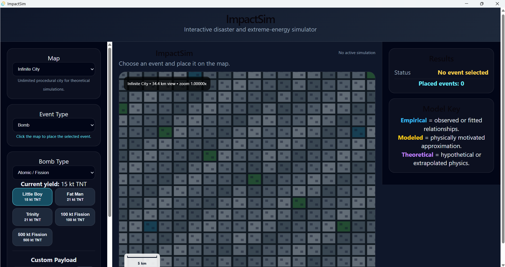
PURPOSE
Understanding extreme scale
ImpactSim was built mainly out of curiosity.
I wanted a way to compare humanity's most powerful weapons against events produced by nature.
Nuclear detonations were part of the idea from the beginning. Meteor impacts and earthquakes were added later because I wanted natural events powerful enough to provide meaningful comparisons.
The project eventually became less about one giant explosion and more about helping me understand the scale of very different kinds of extreme events.
DEVELOPMENT
From a local webpage to a desktop application
ImpactSim started as a locally hosted website.
As I continued working on it, I added new event models, configurable inputs, multiple map systems, geographic placement, effect visualizations, desktop controls, and local map data.
The project eventually became a Tauri desktop application instead of remaining only a browser experiment.
It was also the first project where I found myself managing hundreds and eventually thousands of lines of connected code for one application.
SIMULATION TYPES
Three kinds of extreme events
Nuclear & Extreme Energy
Atomic, thermonuclear, and theoretical antimatter events with configurable yields and different modeled effect regions.
Meteor Impacts
Rocky, iron, and icy impactors using configurable diameter, velocity, and impact angle.
Earthquakes
Configurable earthquake magnitude and focal depth with geographic shaking-intensity regions.
NUCLEAR & EXTREME ENERGY
The system that started the project
The nuclear simulator remains the original foundation of ImpactSim.
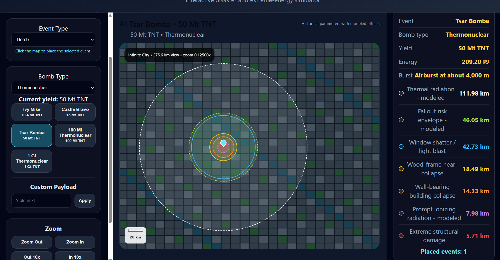
Supports historical and custom fission-event simulations.
Supports much larger yields including historical and theoretical thermonuclear scenarios.
Theoretical antimatter events allow ImpactSim to explore energy levels far beyond existing weapons.
Different regions visualize the modeled physical effects surrounding an event.
HISTORICAL & THEORETICAL PRESETS
From historical weapons to theoretical extremes
Presets make it possible to quickly compare known historical events with hypothetical ones.
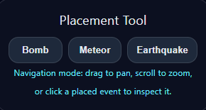
THEORETICAL RANGE
ImpactSim intentionally allows scenarios that go far beyond existing weapons. The current theoretical antimatter range extends as high as 999.99 gigatons of TNT equivalent.
METEOR IMPACTS
Comparing weapons against nature
Meteor impacts were added after I began looking for natural events capable of reaching much larger energy scales.
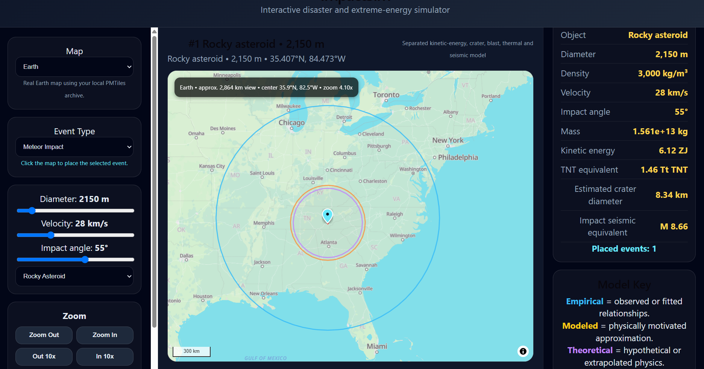
Rocky asteroid, iron asteroid, and icy comet options use different material densities.
Object size changes the calculated mass and total impact energy.
Impact speed contributes directly to the calculated kinetic energy.
The impact angle contributes to the estimated crater and resulting effects.
The model separates crater size, atmospheric blast, thermal effects, and estimated seismic shaking.
EARTHQUAKES
Visualizing shaking instead of blast
Earthquakes provide a different kind of natural event for comparison.
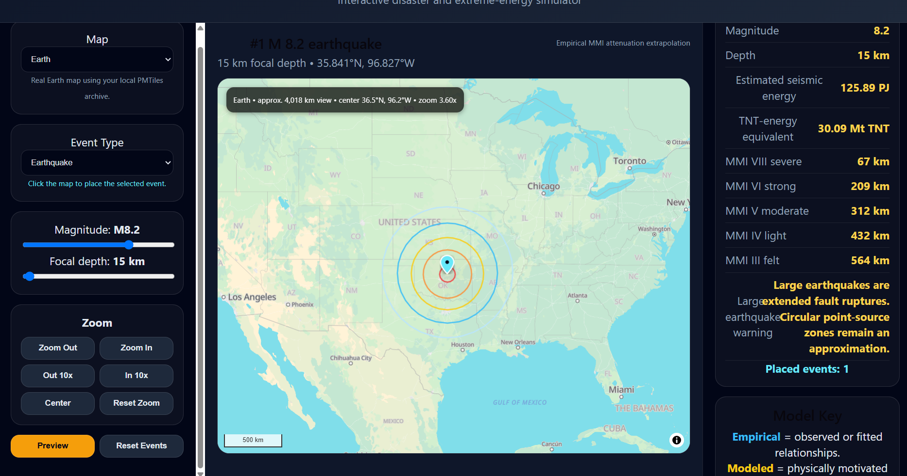
Earthquake simulations use magnitude and focal depth to estimate multiple Modified Mercalli Intensity regions, ranging from weak or felt shaking through severe shaking.
The simulator also calculates estimated seismic energy and a TNT-energy equivalent, making the event easier to compare against the other simulation categories.
VISUALIZATION
Three ways to understand scale
Infinite City
An effectively unlimited procedural environment for abstract scale comparisons without being restricted by the size of the real Earth.
Earth 2D
A real geographic map makes it possible to compare an event against recognizable cities, regions, states, and countries.
Earth 3D Globe
A three-dimensional Earth provides another way to understand geographic scale while using the same event-placement system.
INFINITE CITY
Scale without geographic limits
Infinite City remains useful when a theoretical event becomes too large to think about as a normal city-scale scenario.
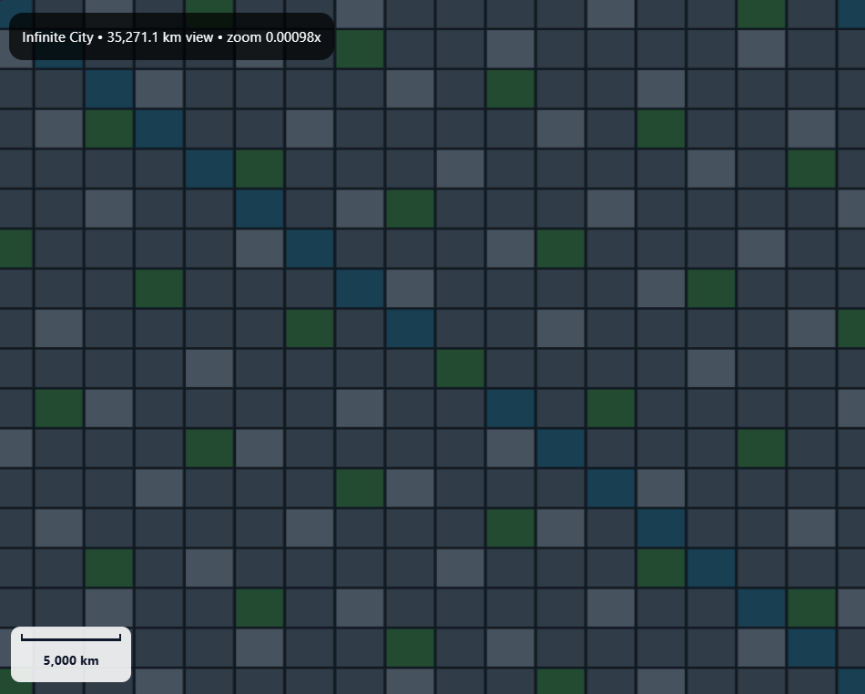
EARTH 2D
Real-world geographic scale
The Earth map lets the same simulation events be placed against real geography instead of an abstract environment.
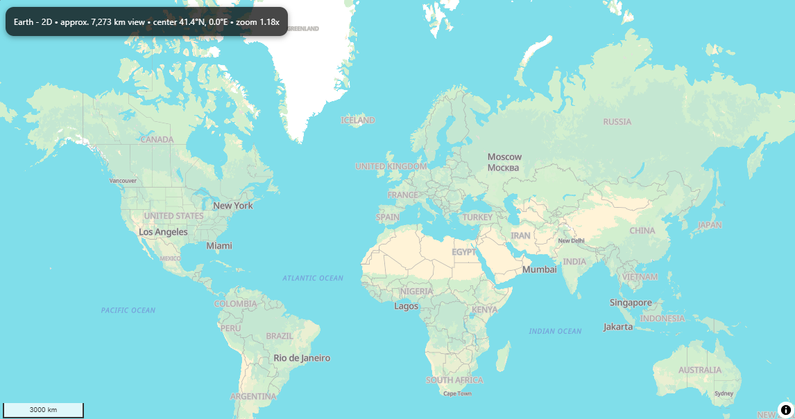
EARTH 3D
Turning the map into a globe
One of the largest additions to ImpactSim is a three-dimensional Earth mode.
The same simulation events used by the 2D Earth map can be displayed across the surface of the globe.
Building the globe also led me to add satellite imagery, elevation data, terrain shading, atmospheric effects, and additional geographic detail.
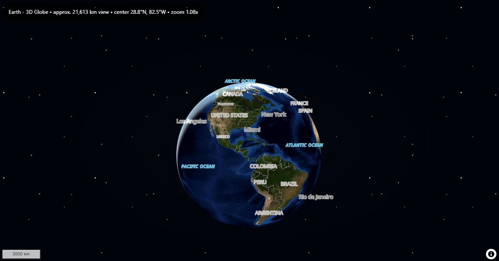
3D EARTH SYSTEM
Building a more detailed Earth
Satellite Imagery
Local raster satellite imagery provides the visual surface used by the 3D Earth.
Terrain
Elevation data adds geographic relief to mountains and other changes in elevation.
Hillshading
Terrain shading makes differences in elevation easier to distinguish visually.
3D Buildings
Building data can be rendered as three-dimensional structures at closer map scales.
Atmosphere
Atmospheric and horizon effects help the Earth read visually as a globe instead of a flat map.
TERRAIN
Visualizing elevation
Terrain data gives the Earth geographic depth that cannot be communicated by a completely flat map.
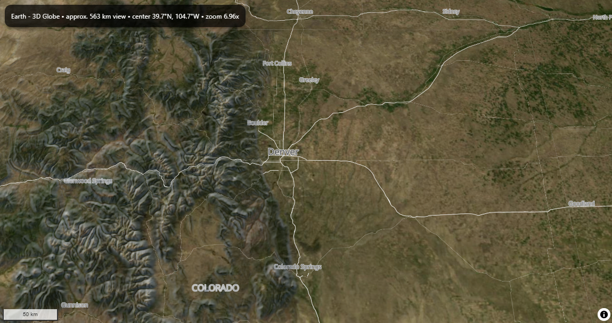
LOCAL MAPPING
Moving map assets into the application
ImpactSim's desktop mapping system has increasingly moved toward local map assets instead of depending on a normal online map service.
The application uses PMTiles archives for Earth map data, terrain data, and satellite imagery.
This became one of the technically difficult parts of the project because MapLibre had to work correctly with the local files while still supporting simulation overlays, event markers, navigation, and globe rendering.
INTERACTION
More than static circles
Placement Tools
Bomb, meteor, and earthquake tools allow events to be placed directly on the active map.
Navigation Mode
Deselecting a placement tool returns the application to normal map navigation and event inspection.
Preview
Events can be previewed before they are permanently placed on the map.
Multiple Events
Several simulations can remain on the same map for direct visual comparison.
Selectable Pins
Placed events use different marker colors based on event type and can be selected again for inspection.
Animated Effects
Effect rings expand outward sequentially from the event center instead of appearing instantly.
MULTIPLE EVENTS
Comparing events on one map
Multiple placed events can remain visible together, allowing different scenarios to be compared directly.
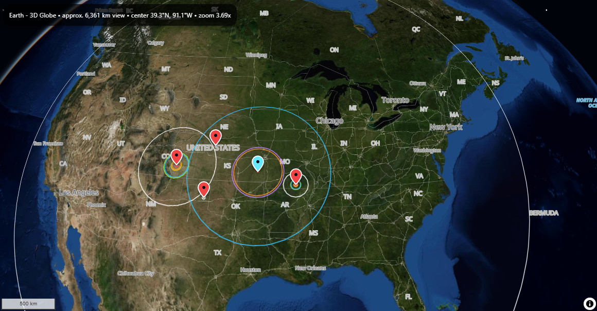
ANIMATION
Expanding effect regions
When an event is placed, its effect regions expand outward in sequence, making the different distances easier to follow visually.
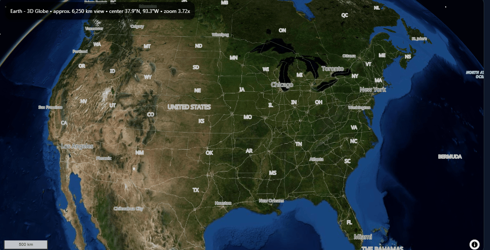
DESKTOP APPLICATION
Display and quality controls
As ImpactSim became a desktop application, I began adding settings expected from standalone software.
The application supports windowed mode, borderless windowed fullscreen, and fullscreen.
Windowed mode provides selectable resolutions, while satellite detail can be adjusted between Low, Medium, High, and Ultra.
The selected configuration can also be stored between sessions.
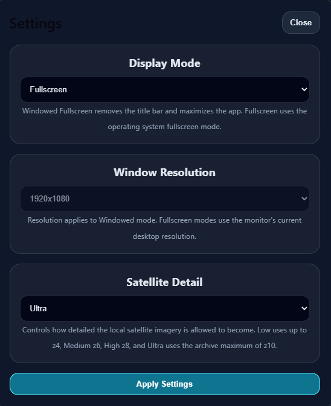
TECHNOLOGY
What ImpactSim uses
React
Builds the interactive application interface and connects the controls to the simulation systems.
TypeScript
Used for simulation logic, event models, map systems, and application behavior.
MapLibre GL
Powers the real-world Earth map and 3D globe.
PMTiles
Stores local vector, terrain, and satellite mapping data used by the desktop application.
Vite
Provides the front-end development and build environment.
Tauri
Packages ImpactSim as a desktop application and provides desktop window controls.
BIGGEST TECHNICAL CHALLENGE
The map kept becoming a project of its own
MapLibre has been one of the hardest parts of ImpactSim for me to implement.
What originally sounded like "put the results on a map" eventually involved geographic calculations, geodesic effect circles, local map archives, event markers, interaction, different map projections, terrain, satellite imagery, and globe rendering.
Adding the Earth map was also the point where the project began to feel much larger than the simple idea I originally imagined.
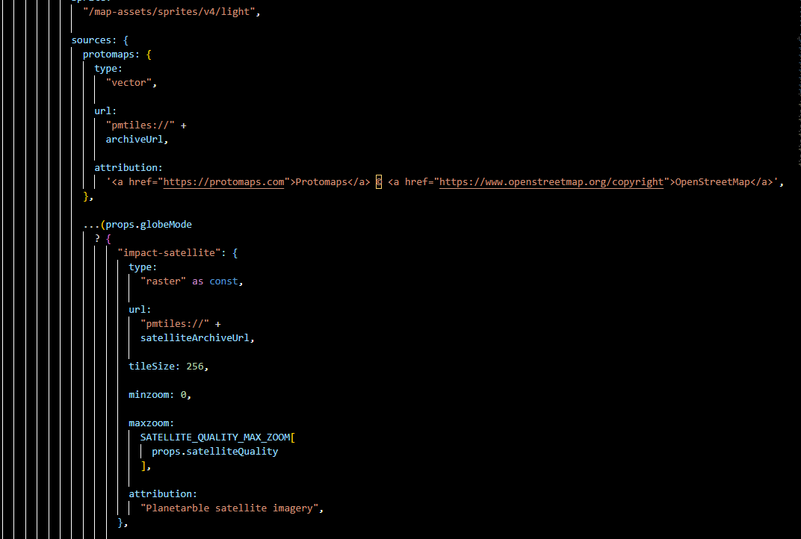
TRY IT
Explore the globe
This lightweight portfolio demo focuses on the interactive Earth visualization while keeping the full desktop application separate.
DEMO VS. FULL APPLICATION
This version is intentionally lightweight so it can run inside the portfolio. The full ImpactSim desktop application contains the complete event models, local satellite data, terrain, settings, and simulation systems.
CURRENT DIRECTION
A simulator built for curiosity
I do not expect ImpactSim to be something someone needs to use every day.
I see it as something a person opens because a question suddenly occurs to them: "What would this actually look like?"
That is essentially the same reason I built it.
I eventually want the application to be accessible to anyone who wants to experiment with those kinds of questions.
PERSONAL REFLECTION
Putting human power into perspective
One of the unexpected things I took away from building ImpactSim was a different sense of scale.
Humanity can create weapons with an almost unimaginable amount of destructive power, but even those weapons suddenly seem small when compared to a natural disaster.
On a personal level, that reinforced my belief in God. Seeing the amount of power that can exist in nature made human strength feel far less absolute than it can sometimes appear.
I found that realization both terrifying and beautiful.
PROJECT GALLERY